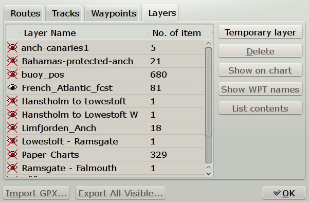
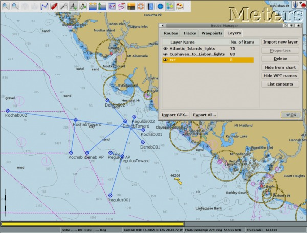
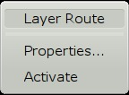
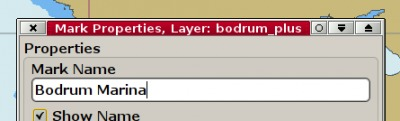
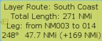

Layers
- Layers are one or more routes, tracks or waypoints that have been saved together in a gpx file. A layer is represented as a single gpx file. A layer is persistent and protected from changes. A waypoint in a gpx file for example, can be imported either as a “waypoint” or as a layer. The difference is that when imported as a layer it cannot be changed or deleted.

The Route Managers Layer Tab

- Layers are useful for many things. It can for example be used to update charts with new navigation marks and dangers as per Notices to Mariners, and to add Radio Call-In Points or to build a database of lights and locations, that will be visible on chart regardless of current scale. See the first picture above, where French and UK forecast areas are good examples of Layers. In the second picture, a very good celestial fix, plotted with a gpx script has been saved as a layer.
- More advanced uses could, for example, be an interactive cruising guide using the possibility to embed links in waypoint descriptions.
When is a feature a part of a Layer?
- Layers are immutable, nothing can be changed. This could make them confusing, unless you are aware of the fact that they are layers!
- To see if a waypoint, route or track, is a part of a layer, right-click the object. If it is part of a layer, the context sensitive menu will say so. Alternatively, open properties and check the top of the dialog. If part of a layer, the layer's name is printed. As always, double clicking on an object directly brings up the properties dialog,



- A route belonging to a layer is also identified as such, by just hovering with the cursor above the route.

- A Route belonging to a layer also has the option “Activate”. It can thus be used, but still, no changes can be made. A much more flexible option, would be to import the route layer file as a normal gpx file.
Handling Layers.
- Layers can be created in OpenCPN and saved as a gpx file, or be created offline manually or by scripts, for example.
- Layers that are saved in a directory called “layers”, in the same place that holds your opencpn.ini(config) file, are automatically loaded on start of OpenCPN. These layers will be listed in the Route Managers Layers Tab on start up. The first time they will all be visible. Adjust visibility by clicking on the “eye” in the first column. This setting will be remembered. Have a look at the first picture on this page!
- The easiest way to find this directory is to go to the
- button in the ToolBar and look all the way down in the first tab (About).
In Linux create the directory: /home/$USER/.opencpn/layers.
- On Mac OS X, the location is “/Users/“username”/Library/Preferences/Layers”. Note that “Library” is a hidden directory in “Lion”.
- Any subdirectories in the layers directory are also loaded.
- Layers worth keeping could be kept in the mentioned “layers” directory and visibility during a session can be handled through “Hide from Chart” or “Show on Chart” buttons. New layers, gpx files, can easily be added in a subdirectory of it's own.
- A few restrictions apply to layer marks. A layer mark cannot be used to set anchor watch on. If right-click-selecting co-located objects, priority is given to non-layer objects.
The Route Managers Layer Tab.
- Temporary layer: Any gpx file can be imported as a layer. This can be used for developing layers, or for import from a user defined directory with predefined layers, as necessary. Layers imported this way will be saved when closing down the computer, they are persistent. More permanent layers should be kept in the “layers” directory, as described above.
- Delete: Unloads the layer, but doesn't of course touch the originally imported gpx file. A progress bar will appear when deleting large layers. It is not possible to stop the deletion, once started. For size restrictions, see below.
- Hide from Chart or Show on Chart Controls if the marked layer is visible. The same thing can be achieved by clicking the “eye” to the left of the layers name. A red X across the eye marks a hidden layer. See picture above. These settings are persistent, they will be remembered after a restart.
- Hide WPT Names Shows a visible layer without waypoint names. This helps to un-clutter layers, when zoomed out.
- List contents or Delist Contents Listing is this context means showing the individual points in the layer as waypoints in the “Waypoints Tab”
- Import GPX.. and Export All..Warning these buttons has nothing to do with Layers. They work as if you are in an other tab. For import use “Import New Layers”. For export, create layers as described above.
- Export All Visible.. exports all visible layers, routes and waypoints to a gpx file. Use this button to create new layers, for example. Just save the gpxfile in the right place, described above. Note that “visible” in this context is the opposite to a layer, route or waypoint being “hidden”. This means that objects not visible on the screen, may be included.
- A progress bar will appear when exporting large layers. It is not possible to stop the deletion, once started. For size restrictions, see below.
- If a layer includes extended marks, linked to pictures, for example, the pictures will not be exported, only the links to the pictures. To “export” the whole layer to another computer, copy all the pictures separately. Adjust all the links in the gpx file, to the new computer, by doing a “search and replace” in a text editor on the new computer.
Size Limits for the Layer feature.
- OpenCPN is not suited to handle very large permanent layer files. Exporting and deleting such layers bogs down the program. With older hardware or limited available memory, even these recommendations may be to optimistic.
- OpenCPN 4.0 has refined the track and layer logic to improve performance with large tracks. See next paragraph.
- Newly developed static layers by argus.survice.com show that OpenCPN has problems with very large layers consisting of waypoints named after the depth at the position. With 10,000 + posistions it's necessary to consider some rules when using OpenCPN. If you disregard these rules, expect bad performance.
- Deactivating OpenGL may improve the performance somewhat.
- Always load the files as a temporary layer, zoomed in on your local area. Never load when zoomed out. Why? Zoomed out OpenCPN has to handle all wpts at the same time when zooming/panning. Zoomed in it just a handful of wpts at the same time.
- An alternative is to load a file when zoomed in on an other area. This goes quick. Then promptly make the layer invisible. Only make the layer visible when zoomed in on the actual area.
- Never zoom out with these files loaded, unless you make the layer invisible first. There is no point in this anyway as all you will see is a lot of black “smear”.
More on creating layers and saving data.
- Have a look at Navigation Data Backup